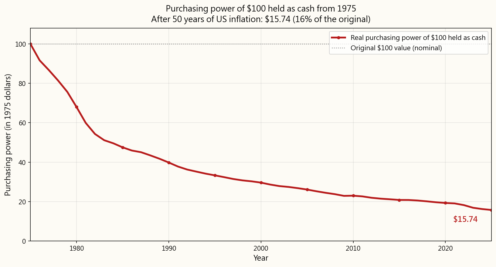
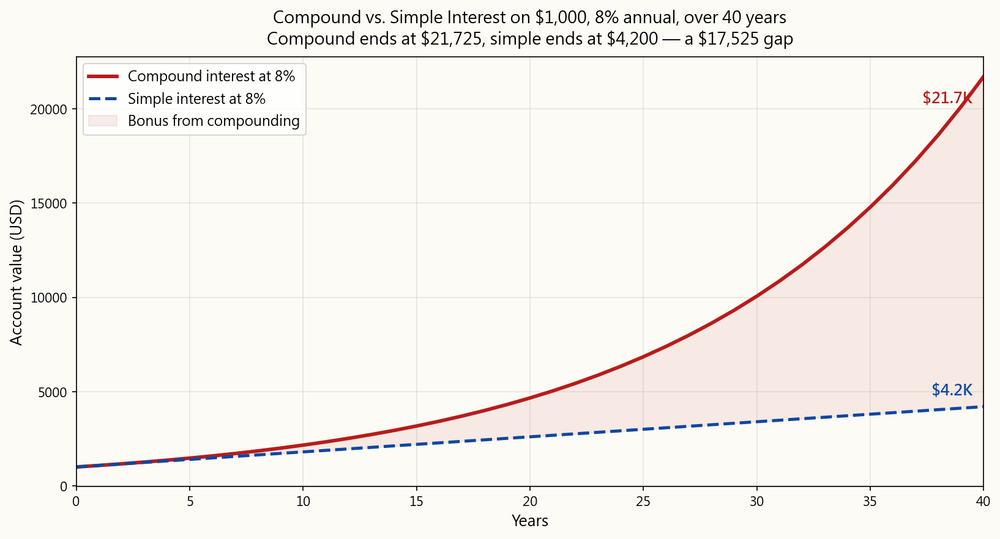
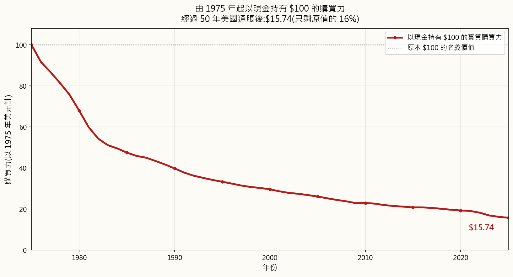
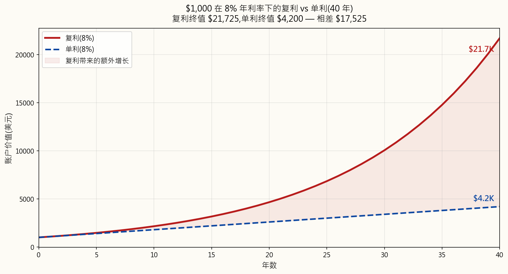

Week 1: Why Invest? The Time Value of Money
1. Why This Is Important
Money sitting idle is money losing value. Every single day, inflation chips away at the purchasing power of cash stuffed under a mattress or parked in a zero-interest checking account. Understanding why you need to invest is not just a financial skill -- it is a survival skill in a modern economy.
Consider this: in 1990, a cup of coffee cost about $0.75. By 2025, that same cup costs $5.00 or more. The coffee did not become six times better. Your dollar became six times weaker. That is inflation at work, and it never stops.
The time value of money (TVM) is the foundational principle of all finance. It states that a dollar today is worth more than a dollar tomorrow. This is true for three reasons:
If you understand TVM, you understand why investing is not optional. It is the only way to ensure your wealth grows faster than the economy erodes it.
Take the last 55 years and run a thought experiment with three savers. Starting in 1971, each one deposits exactly $10,000 a year — the same nominal amount, every year, no exception. The only thing that differs is where they put it.
- Person A keeps it in cash. No bank, no interest. Pure currency, sitting in a
- Person B parks it in short-term US Treasury bills, the safest interest-bearing
- Person C puts it in the S&P 500 with all dividends reinvested.

After 55 years, each person has deposited the same $550,000 of their own money. But the end balances are not in the same league:
| Vehicle | Annualized return (CAGR) | End value (nominal) | End value in 1971 dollars |
|---|---|---|---|
| Person C — S&P 500 | 11.24% / yr | $42,041,000 | $5,079,000 |
| Person B — T-bills | 4.38% / yr | $1,725,000 | $208,000 |
| Person A — Cash | 0.00% / yr | $550,000 | $66,000 |
The "annualized return" column is the compound annual growth rate (CAGR) — the single constant rate that, compounded over the same 55 years, would produce the same growth factor as the actual year-by-year path of the underlying asset. It is the right number to quote, because the simple arithmetic average of annual returns overstates real compound performance. For reference, US CPI averaged **3.92% per year** over the same window — so anything below that line is a real-purchasing-power loss before you even talk about taxes.
Person C ends with 24× the nominal wealth of Person B and 76× the nominal wealth of Person A, despite contributing the identical $10,000 a year. And look closer at Person A: the $550,000 cash pile, after 55 years of accumulated US inflation, has the real purchasing power of only about $66,000 in 1971 dollars. Person A did not just fail to grow their wealth — inflation actively shrank it while they were dutifully saving.
The difference is entirely due to the time value of money and compound growth, applied across decades. Compounding rewards capital that earns a return; it punishes capital that sits.
This week's lesson gives you the conceptual foundation for everything that follows in this course. Master these ideas, and every future topic will make more sense.
2. What You Need to Know
2.1 Inflation: The Silent Wealth Destroyer
Inflation is the general increase in prices over time. Central banks (like the Federal Reserve in the US) target about 2% annual inflation, but actual inflation can vary widely.
Don't trust the textbook example with a smooth assumed rate — let's use real US CPI data. Imagine you stuffed a crisp $100 bill under the mattress on January 1, 1970, and never touched it. Here is what its purchasing power has been at the start of every five years since:
| Year | Years elapsed | Purchasing power | % of original |
|---|---|---|---|
| 1970 | 0 | $100.00 | 100.0% |
| 1975 | 5 | $74.49 | 74.5% |
| 1980 | 10 | $50.65 | 50.6% |
| 1985 | 15 | $35.39 | 35.4% |
| 1990 | 20 | $29.66 | 29.7% |
| 1995 | 25 | $24.81 | 24.8% |
| 2000 | 30 | $22.06 | 22.1% |
| 2005 | 35 | $19.44 | 19.4% |
| 2010 | 40 | $17.13 | 17.1% |
| 2015 | 45 | $15.51 | 15.5% |
| 2020 | 50 | $14.37 | 14.4% |
| 2025 | 55 | $11.73 | 11.7% |
That $100 from 1970 has the purchasing power of just $11.73 today — inflation has eaten 88.3% of its real value in a single working lifetime. The 1970s stagflation alone cut its value almost in half by 1980 (down to $50.65), and even the relatively benign 25 years that followed (1980 to 2005) shaved off another two-thirds. Even within your own lifetime, the last 25 years tell the same story — **$100 from January 2000 is worth only $53.16 today, a 46.8% loss of purchasing power in just one generation**. And the post-2020 acceleration alone shaved roughly **18% off the dollar in five years**.
This is the "real" value of money — what it can actually buy, as opposed to the "nominal" value (the number printed on the bill). Cash is not safe. Cash that earns nothing is a steady, almost imperceptible loss. The slowness of the loss is exactly what makes it so dangerous: people who "protect" their money by leaving it in a checking account are making one of the most aggressive bets on the chart above — and losing it.

How inflation is measured:
- CPI (Consumer Price Index) — tracks the cost of a "basket" of goods
- PCE (Personal Consumption Expenditures) — the Federal Reserve's
- Core inflation — excludes volatile food and energy prices to show
Historical US inflation rates (decade averages):
| Period | Avg annual CPI |
|---|---|
| 1930–1940 | −2.0% |
| 1940–1950 | +5.6% |
| 1950–1970 | +2.3% |
| 1970–1980 | +7.8% |
| 1980–2000 | +3.8% |
| 2000–2020 | +2.1% |
| 2020–2025 | +4.8% |
Notice how inflation spiked in the 1970s (oil crises) and again in the early 2020s (pandemic supply shocks). These spikes can devastate purchasing power rapidly.
2.2 Compound Interest: The Eighth Wonder of the World
Compound interest means you earn interest on your interest. It is the single most powerful force in personal finance.
The compound interest formula:
\[ FV = PV \cdot (1 + r)^n \]
Where:
- \(FV\) = Future Value (what your money grows to)
- \(PV\) = Present Value (what you start with)
- \(r\) = interest rate per period (as a decimal)
- \(n\) = number of periods
| Year | Starting balance | Interest earned | Ending balance |
|---|---|---|---|
| 1 | $1,000.00 | $80.00 | $1,080.00 |
| 2 | $1,080.00 | $86.40 | $1,166.40 |
| 3 | $1,166.40 | $93.31 | $1,259.71 |
| 5 | $1,360.49 | $108.84 | $1,469.33 |
| 10 | $1,999.00 | $159.92 | $2,158.92 |
| 20 | $4,315.70 | $345.26 | $4,660.96 |
| 30 | $9,317.27 | $745.38 | $10,062.66 |
| 40 | $20,106.85 | $1,608.55 | $21,715.40 |
Notice how the interest earned in year 40 ($1,608) is more than the original investment ($1,000). That is compounding at work.
Visualizing compound vs. simple interest:

With simple interest, you earn 8% of the original $1,000 every year ($80/year). With compound interest, you earn 8% of the current balance, which grows each year. Over long periods, the gap becomes enormous — the example above ends with $21,725 (compound) vs. $4,200 (simple), a five-fold difference earned entirely by leaving the prior interest in the account instead of taking it out.
The compounding frequency matters too. Same $10,000 at the same 12% annual rate for 10 years, only the compounding frequency varies:
| Compounding | Final value |
|---|---|
| Annually | $31,058.48 |
| Semi-annually | $32,071.35 |
| Quarterly | $32,620.38 |
| Monthly | $33,003.87 |
| Daily | $33,194.62 |
| Continuously | $33,201.17 |
More frequent compounding produces higher returns, but the marginal benefit shrinks fast. The jump from annual to monthly is significant; the jump from daily to continuous is essentially zero.
2.3 The Rule of 72
The Rule of 72 is a mental shortcut for estimating how long it takes to double your money at a given annual rate:
$$ \text{Years to double} \approx \frac{72}{r} \quad \text{(where } r \text{ is the annual rate in percent)} $$
| Annual return | Years to double |
|---|---|
| 2% | \(72 / 2 = 36\) years |
| 4% | \(72 / 4 = 18\) years |
| 6% | \(72 / 6 = 12\) years |
| 8% | \(72 / 8 = 9\) years |
| 10% | \(72 / 10 = 7.2\) years |
| 12% | \(72 / 12 = 6\) years |
Why does this work? It is a mathematical approximation derived from the natural logarithm. The exact formula is
$$ t = \frac{\ln 2}{\ln(1 + r)} $$
but 72 is close enough for mental math and has the practical advantage of being divisible by 2, 3, 4, 6, 8, 9, and 12 — most of the rates you actually care about.
**The Rule of 72 in reverse — inflation halves your purchasing power on the same clock.** Replace "annual return" with "annual inflation rate" and "years to double" becomes "years until your dollar buys half as much":
| Inflation rate | Years until purchasing power halves |
|---|---|
| 3% | \(72 / 3 = 24\) years |
| 4% | \(72 / 4 = 18\) years |
| 6% | \(72 / 6 = 12\) years |
| 9% | \(72 / 9 \approx 8\) years |
This makes inflation tangible. If inflation averages 4%, every 18 years your money buys only half as much. This is why "safe" savings accounts that earn 1-2% are actually losing you money in real terms.
2.4 Opportunity Cost
Opportunity cost is the value of the next best alternative you give up when making a decision. In investing, it means every dollar has competing uses, and choosing one means forgoing another.
Decision tree — what to do with $10,000:
flowchart TD
Start(["$10,000<br/>to allocate"])
Bank["Save in bank<br/>0.5% APY"]
Index["Invest in<br/>index fund<br/>~10% avg"]
Debt["Pay off credit<br/>card debt<br/>20% APR"]
BankEnd["After 10 yrs<br/><b>$10,511</b>"]
IndexEnd["After 10 yrs<br/><b>$25,937</b>"]
DebtEnd["Interest avoided<br/>over 10 yrs<br/><b>$31,875</b>"]
Start --> Bank
Start --> Index
Start --> Debt
Bank --> BankEnd
Index --> IndexEnd
Debt --> DebtEnd
classDef option fill:#fdfbf5,stroke:#5a5a5a,stroke-width:1.5px,color:#1a2332
classDef result fill:#fff,stroke:#0d47a1,stroke-width:1.5px,color:#1a2332
classDef winner fill:#fff5e6,stroke:#b71c1c,stroke-width:2px,color:#b71c1c
classDef start fill:#0d47a1,stroke:#0d47a1,color:#fff,stroke-width:1.5px
class Start start
class Bank,Index,Debt option
class BankEnd,IndexEnd result
class DebtEnd winner
flowchart TD
Start(["$10,000<br/>to allocate"])
Bank["Save in bank<br/>0.5% APY"]
Index["Invest in<br/>index fund<br/>~10% avg"]
Debt["Pay off credit<br/>card debt<br/>20% APR"]
BankEnd["After 10 yrs<br/><b>$10,511</b>"]
IndexEnd["After 10 yrs<br/><b>$25,937</b>"]
DebtEnd["Interest avoided<br/>over 10 yrs<br/><b>$31,875</b>"]
Start --> Bank
Start --> Index
Start --> Debt
Bank --> BankEnd
Index --> IndexEnd
Debt --> DebtEnd
classDef option fill:#fdfbf5,stroke:#5a5a5a,stroke-width:1.5px,color:#1a2332
classDef result fill:#fff,stroke:#0d47a1,stroke-width:1.5px,color:#1a2332
classDef winner fill:#fff5e6,stroke:#b71c1c,stroke-width:2px,color:#b71c1c
classDef start fill:#0d47a1,stroke:#0d47a1,color:#fff,stroke-width:1.5px
class Start start
class Bank,Index,Debt option
class BankEnd,IndexEnd result
class DebtEnd winner
In this example, paying off high-interest credit card debt has the highest "return" because you are eliminating a 20% annual cost. This is why financial advisors often recommend paying off high-interest debt before investing.
Key insight: Opportunity cost applies to time as well as money. Every year you delay investing has a measurable cost, because you lose that year of compounding forever.
The cost of waiting — $5,000/year at a 10% average return, ending at age 65:
| Start age | Years invested | Total contributed | Final value at 65 |
|---|---|---|---|
| 20 | 45 | $225,000 | $3,616,635 |
| 25 | 40 | $200,000 | $2,212,963 |
| 30 | 35 | $175,000 | $1,355,122 |
| 35 | 30 | $150,000 | $822,470 |
| 40 | 25 | $125,000 | $491,735 |
| 45 | 20 | $100,000 | $286,375 |
Starting at 20 instead of 30 means investing only $50,000 more, but ending up with $2.26 million more. The early years of compounding are disproportionately valuable.
2.5 Real vs. Nominal Returns
Nominal return is the raw percentage gain on an investment, not adjusted for inflation. Real return is the nominal return minus inflation, representing actual purchasing power gained.
A quick approximation:
$$ r_{\text{real}} \approx r_{\text{nominal}} - i $$
The exact relationship (the Fisher equation) is:
$$ r_{\text{real}} = \frac{1 + r_{\text{nominal}}}{1 + i} - 1 $$
Example — 10% nominal return with 3% inflation:
$$ \begin{aligned} r_{\text{real, approx}} &= 10\% - 3\% = 7\% \\ r_{\text{real, exact}} &= \frac{1.10}{1.03} - 1 = 6.80\% \end{aligned} $$
The approximation is close enough for mental math at low inflation; at high inflation or high return, you want the exact form.
Historical real returns by asset class (US, approximate):
| Asset class | Nominal | Inflation | Real |
|---|---|---|---|
| US Stocks (S&P 500) | ~10.0% | ~3.0% | ~7.0% |
| US Bonds (10-yr) | ~5.0% | ~3.0% | ~2.0% |
| Gold | ~7.0% | ~3.0% | ~4.0% |
| Savings Account | ~2.0% | ~3.0% | ~−1.0% |
| Cash (mattress) | 0.0% | ~3.0% | ~−3.0% |
Critical takeaway: A savings account earning 2% in a 3% inflation environment is losing 1% of purchasing power per year. Cash under the mattress is losing 3% per year. Only assets that earn above the inflation rate grow your real wealth.
2.6 Future Value and Present Value
These are the two core TVM calculations.
Future Value (FV): What a sum of money today will be worth in the future.
\[ FV = PV \cdot (1 + r)^n \]
Example — what will $5,000 be worth in 20 years at 8%?
\[ \begin{aligned} FV &= 5{,}000 \cdot (1.08)^{20} \\ &= 5{,}000 \cdot 4.6610 \\ &= \$23{,}305 \end{aligned} \]
Present Value (PV): What a future sum of money is worth today.
\[ PV = \frac{FV}{(1 + r)^n} \]
Example — what is $50,000 in 15 years worth today at 7%?
\[ \begin{aligned} PV &= \frac{50{,}000}{(1.07)^{15}} \\ &= \frac{50{,}000}{2.7590} \\ &= \$18{,}126 \end{aligned} \]
This means: If someone offers you $50,000 in 15 years, and you could earn 7% on your money, that offer is only worth $18,126 to you today. If they also offer you $20,000 right now, the $20,000 today is the better deal.
Future Value of an Annuity (regular contributions):
\[ FV = PMT \cdot \frac{(1 + r)^n - 1}{r} \]
where \(PMT\) = regular payment amount.
Example — $500/month for 30 years at 8% annual (0.667% monthly):
\[ \begin{aligned} FV &= 500 \cdot \frac{(1.00667)^{360} - 1}{0.00667} \\ &= 500 \cdot 1{,}491.57 \\ &= \$745{,}785 \end{aligned} \]
Total contributed: \(500 \times 360 = \$180{,}000\). Total growth: \(\$745{,}785 - \$180{,}000 = \$565{,}785\).
Your investment growth ($565,785) is more than triple what you actually put in ($180,000). That is the power of consistent investing combined with compounding.
Discounting a stream of future cash flows. Five $100 payments, one at the end of each of the next five years, discounted at 7%:
$$ PV = \sum_{t=1}^{5} \frac{\$100}{(1.07)^t} $$
| Year | Future payment | Discount factor | Present value |
|---|---|---|---|
| 1 | $100 | \(1 / 1.07^{1} = 0.9346\) | $93.46 |
| 2 | $100 | \(1 / 1.07^{2} = 0.8734\) | $87.34 |
| 3 | $100 | \(1 / 1.07^{3} = 0.8163\) | $81.63 |
| 4 | $100 | \(1 / 1.07^{4} = 0.7629\) | $76.29 |
| 5 | $100 | \(1 / 1.07^{5} = 0.7130\) | $71.30 |
| Total PV | $410.02 |
Each future $100 is worth less today because of the time value of money. The further in the future a payment is, the less it is worth today — the year-5 $100 is worth only $71.30 today, while the year-1 $100 is worth $93.46.
2.7 Putting It All Together: The Investing Imperative
Three paths over 30 years ($10,000 starting, $5,000/year added):
| Metric | Do nothing (0%) | Savings account (1.5%) | Invest in S&P (10%) |
|---|---|---|---|
| Total contributed | $160,000 | $160,000 | $160,000 |
| Final nominal value | $160,000 | $192,760 | $987,174 |
| Real value (3% infl.) | $65,890 | $79,379 | $406,392 |
| Purchasing power | Lost 59% | Lost 50% | Gained 154% |
Only the investor actually grows their wealth in real terms. The saver barely keeps up. The person who does nothing loses more than half their purchasing power.
3. Common Misconceptions
Misconception 1: "Investing is gambling."
Gambling has a negative expected return (the house always wins). Investing in diversified assets has a historically positive expected return. The S&P 500 has returned roughly 10% annually over the past century, including the Great Depression, World War II, the 2008 financial crisis, and COVID-19. Short-term speculation on individual stocks can resemble gambling, but disciplined long-term investing in diversified funds is fundamentally different.
Misconception 2: "I need a lot of money to start investing."
Many brokerages now offer $0 minimums and fractional shares. You can buy $10 worth of an S&P 500 index fund. The most important factor is not how much you start with, but how early you start and how consistently you contribute. Even $50 per month invested from age 22 grows to over $350,000 by age 65 at 10% average returns.
Misconception 3: "Saving is the same as investing."
Saving means putting money aside. Investing means putting money to work. A savings account earning 0.5% while inflation runs at 3% means you are losing 2.5% of purchasing power annually. Saving is important for emergency funds and short-term goals, but for long-term wealth building, investing is essential.
Misconception 4: "I should wait for the 'right time' to invest."
Market timing is extraordinarily difficult. Studies consistently show that "time in the market" beats "timing the market." A Schwab study found that even someone who invested at the worst possible time each year (the market peak) still significantly outperformed someone who kept their money in cash waiting for a better entry point.
Misconception 5: "Compound interest only matters for large sums."
The percentage works the same regardless of the amount. $100 growing at 10% for 40 years becomes $4,526. The multiplier (45x) is identical whether you start with $100 or $100,000. The key is the growth rate and the time horizon.
Misconception 6: "Inflation is always around 2-3%."
While central banks target 2%, actual inflation can be much higher. The US experienced 13.5% inflation in 1980. Argentina has seen 100%+ inflation in recent years. Even in stable economies, inflation can spike due to supply shocks, monetary policy changes, or geopolitical events. Your investment strategy needs to account for variable inflation scenarios.
Misconception 7: "A 10% gain followed by a 10% loss gets you back to even."
This is mathematically incorrect. $100 + 10% = $110. Then $110 - 10% = $99. You are actually down 1%. Losses hurt more than equivalent gains help, which is why managing downside risk matters in investing. A 50% loss requires a 100% gain just to break even.
Loss/gain asymmetry — what it takes to get back to even after a drawdown:
| Loss | Gain needed to recover |
|---|---|
| −10% | +11.1% |
| −20% | +25.0% |
| −30% | +42.9% |
| −40% | +66.7% |
| −50% | +100.0% |
| −75% | +300.0% |
| −90% | +900.0% |
Mathematically, after a loss of \(L\), the recovery gain needed is \(G = \frac{L}{1 - L}\) — which grows much faster than \(L\) once \(L\) gets large.
Misconception 8: "The Rule of 72 is exact."
It is an approximation. It works best for interest rates between 6% and 10%. At very low or very high rates, it becomes less accurate. For 2%, the actual doubling time is 35.0 years (Rule of 72 says 36). For 20%, the actual time is 3.8 years (Rule of 72 says 3.6). Close enough for quick mental math, but do not use it for precise financial planning.
4. Q&A
Q1: What is the time value of money in simple terms?
A: A dollar today is worth more than a dollar in the future because (1) inflation reduces what that future dollar can buy, (2) you could invest today's dollar and earn a return, and (3) there is always some risk that a promised future payment will not materialize. This is why lenders charge interest and why investors demand returns -- they are being compensated for giving up the use of their money now.
Q2: How does compound interest differ from simple interest?
A: Simple interest is calculated only on the original principal. If you invest $1,000 at 5% simple interest, you earn $50 every year, regardless of how much has accumulated. Compound interest is calculated on the principal plus all accumulated interest. So in year 2, you earn interest on $1,050, not just $1,000. Over long periods, this difference becomes dramatic. After 30 years, $1,000 at 5% simple interest becomes $2,500. At 5% compound interest, it becomes $4,322.
Q3: Why does the Rule of 72 work?
A: It is derived from the mathematical relationship ln(2) / ln(1 + r), where ln is the natural logarithm and r is the interest rate. For rates near 8%, 72/r closely approximates this formula. The number 72 was chosen because it is easily divisible by 2, 3, 4, 6, 8, 9, and 12, making mental math convenient. Some people use the "Rule of 70" for lower rates or the "Rule of 69.3" for continuous compounding, but 72 is the most practical for everyday use.
Q4: What is the difference between nominal and real returns?
A: Nominal return is the headline number -- "the stock market returned 10% this year." Real return adjusts for inflation to show your actual increase in purchasing power. If the market returned 10% but inflation was 4%, your real return was approximately 6%. Always think in real terms when evaluating long-term investment performance, because nominal returns can be misleading in high-inflation environments.
Q5: How do I calculate the present value of a future sum?
A: Use the formula PV = FV / (1 + r)^n. Decide on an appropriate discount rate (r) -- this is typically the return you could earn on alternative investments. For example, if someone promises you $10,000 in 10 years and you could earn 7% elsewhere: PV = $10,000 / (1.07)^10 = $10,000 / 1.9672 = $5,083. That future $10,000 is only worth about $5,083 to you today.
Q6: What is a good annual return to expect from investing?
A: The US stock market (S&P 500) has historically returned about 10% per year nominally, or about 7% after inflation. However, returns vary enormously year to year. In any given year, the market might return +30% or -30%. The 10% average only emerges over long time horizons (20+ years). Bond returns have historically been about 5% nominal (2% real). A balanced portfolio might target 7-8% nominal. Never assume any specific return is guaranteed.
Q7: Should I pay off debt or invest?
A: Compare the interest rate on your debt to the expected return on your investments. If your debt charges 20% interest (credit cards), paying it off is like earning a guaranteed 20% return -- better than any investment. If your debt is at 4% (mortgage), and you expect 10% from investments, investing may be more profitable, though debt payoff is a guaranteed "return" while investment returns are not. A common strategy: pay off all debt above 6-7% interest, then invest the rest.
Q8: Does inflation affect all goods equally?
A: No. Different categories inflate at different rates. Over the past 20 years in the US, healthcare and education costs have risen much faster than the overall CPI, while technology and clothing have often gotten cheaper. The CPI is an average across a basket of goods, so your personal inflation rate depends on what you actually spend money on. Retirees, for instance, often face higher effective inflation because healthcare is a larger share of their spending.
Q9: What happens if I invest a lump sum vs. regular monthly contributions?
A: Statistically, lump-sum investing beats dollar-cost averaging (regular contributions) about two-thirds of the time, because markets tend to go up. However, dollar-cost averaging reduces the risk of investing everything at a market peak, and it is more practical for most people who earn a regular paycheck. The best strategy is usually: invest each paycheck as you receive it. Do not hold cash waiting for a "better time."
Q10: Can compound interest work against me?
A: Absolutely. Compound interest on debt is the mirror image of compound interest on investments. A $5,000 credit card balance at 24% APR, if unpaid, grows to $14,615 in just 5 years. This is why high-interest debt is a financial emergency. The same mathematical force that builds wealth through investing destroys wealth through unpaid debt.
第一週：為何要投資？貨幣時間價值
a) 為何這很重要
閒置的金錢就是不斷貶值的金錢。每一天，通脹都在蠶食塞在床墊底下、或存放在零利息往來戶口的現金購買力。明白為何需要投資，不僅是一項財務技能——在現代經濟體系中，這更是一種生存技能。
想想這個例子：1990年，一杯咖啡大約售$0.75。到了2025年，同一杯咖啡要$5.00甚至更貴。咖啡並沒有變得好六倍。是你的美元變得弱了六倍。這就是通脹在運作，而且從未停止。
貨幣時間價值（TVM）是所有金融學的基礎原則。它指出，今天的一元比明天的一元更值錢。這有三個原因：
若你明白貨幣時間價值，你就明白投資並非可選項目。這是確保你的財富增長速度快過經濟侵蝕速度的唯一途徑。
回望過去55年，以三位儲蓄者做一個思想實驗。由1971年起，每人每年存入剛好$10,000——相同的名義金額，年年如此，無一例外。唯一的分別在於他們把錢放在哪裡。
- 甲 將錢保留為現金。沒有銀行，沒有利息。純粹的貨幣，放在抽屜裡。
- 乙 把錢存入短期美國國債——最安全的生息工具。
- 丙 把錢投入標普500指數，並將所有股息再投資。

經過55年，每人累計存入同樣的$550,000。但最終結餘根本不在同一個水平：
| 工具 | 年化回報（複合年增長率） | 最終價值（名義） | 最終價值（以1971年計） |
|---|---|---|---|
| 丙 — 標普500 | 11.24% / 年 | $42,041,000 | $5,079,000 |
| 乙 — 國債 | 4.38% / 年 | $1,725,000 | $208,000 |
| 甲 — 現金 | 0.00% / 年 | $550,000 | $66,000 |
「年化回報」一欄即複合年增長率（CAGR）——這是一個恒定利率，若以相同的55年複利計算，將產生與標的資產實際逐年路徑相同的增長倍數。這是正確的引用數字，因為年度回報的簡單算術平均值會高估實際複利表現。作為參考，同一時段美國消費物價指數（CPI）平均每年3.92%——任何低於此水平的投資，在計稅前均屬實際購買力的虧損。
丙的名義財富是乙的24倍、甲的76倍，儘管三人每年投入的$10,000完全相同。再細看甲：那筆$550,000的現金，歷經55年的美國通脹積累，其實際購買力僅相當於以1971年計約$66,000。甲不僅未能令財富增長——在他們盡責儲蓄的同時，通脹主動令其縮水。
差異完全源於貨幣時間價值與複利增長在數十年間的作用。複利獎勵能夠賺取回報的資本，懲罰靜止不動的資本。
本週課程為本課程的一切後續內容奠定概念基礎。掌握這些概念，未來每個課題都會更容易理解。
b) 你需要了解的知識
1. 通脹：無聲的財富殺手
通脹是物價隨時間普遍上升的現象。中央銀行（如美國的美聯儲）以每年約2%的通脹為目標，但實際通脹可以大幅波動。
不要輕信教科書中使用平滑假設利率的例子——讓我們使用真實的美國CPI數據。想像你在1970年1月1日把一張嶄新的$100鈔票塞到床墊下，從此不再碰它。以下是從此以後每五年初的購買力：
| 年份 | 已過年數 | 購買力 | 佔原始比例 |
|---|---|---|---|
| 1970 | 0 | $100.00 | 100.0% |
| 1975 | 5 | $74.49 | 74.5% |
| 1980 | 10 | $50.65 | 50.6% |
| 1985 | 15 | $35.39 | 35.4% |
| 1990 | 20 | $29.66 | 29.7% |
| 1995 | 25 | $24.81 | 24.8% |
| 2000 | 30 | $22.06 | 22.1% |
| 2005 | 35 | $19.44 | 19.4% |
| 2010 | 40 | $17.13 | 17.1% |
| 2015 | 45 | $15.51 | 15.5% |
| 2020 | 50 | $14.37 | 14.4% |
| 2025 | 55 | $11.73 | 11.7% |
1970年的$100如今的購買力只剩$11.73——通脹在一個完整工作生涯內已蠶食了88.3%的實際價值。光是1970年代的滯脹，到1980年便已將其購買力腰斬至$50.65，而此後相對溫和的25年（1980至2005年）又再削去了三分之二。即使在你的有生之年，過去25年同樣說明了相同的故事——2000年1月的$100如今只值$53.16，短短一代人間購買力損失了46.8%。而2020年後的加速更是在五年內單獨削去了美元約18%的價值。
這就是貨幣的「實際」價值——它實際能買到什麼，與「名義」價值（鈔票上印的數字）相對。現金並不安全。什麼都不賺的現金，是一種穩定的、幾近察覺不到的虧損。虧損的緩慢性正是使它如此危險的原因：那些把錢留在往來戶口來「保護」財富的人，正在上圖中做出最激進的押注之一——而且在輸掉它。

如何衡量通脹：
- 消費物價指數（CPI） —— 追蹤典型家庭購買的一籃子商品及服務的成本（食品、住房、交通等）。
- 個人消費支出（PCE） —— 美聯儲的首選指標；比CPI範圍更廣。
- 核心通脹 —— 剔除波動性較高的食品及能源價格，以呈現潛在趨勢。
| 時期 | 平均年度CPI |
|---|---|
| 1930–1940 | −2.0% |
| 1940–1950 | +5.6% |
| 1950–1970 | +2.3% |
| 1970–1980 | +7.8% |
| 1980–2000 | +3.8% |
| 2000–2020 | +2.1% |
| 2020–2025 | +4.8% |
留意通脹如何在1970年代（石油危機）及2020年代初（疫情供應衝擊）急升。這些衝擊可以迅速摧毀購買力。
2. 複利：世界第八大奇蹟
複利意味著你在利息上賺取利息。這是個人理財中最強大的單一力量。
複利公式：
\[ FV = PV \cdot (1 + r)^n \]
其中：
- \(FV\) = 終值（你的錢增長到的金額）
- \(PV\) = 現值（你的起始金額）
- \(r\) = 每期利率（以小數表示）
- \(n\) = 期數
| 年份 | 期初結餘 | 所賺利息 | 期末結餘 |
|---|---|---|---|
| 1 | $1,000.00 | $80.00 | $1,080.00 |
| 2 | $1,080.00 | $86.40 | $1,166.40 |
| 3 | $1,166.40 | $93.31 | $1,259.71 |
| 5 | $1,360.49 | $108.84 | $1,469.33 |
| 10 | $1,999.00 | $159.92 | $2,158.92 |
| 20 | $4,315.70 | $345.26 | $4,660.96 |
| 30 | $9,317.27 | $745.38 | $10,062.66 |
| 40 | $20,106.85 | $1,608.55 | $21,715.40 |
留意第40年所賺的利息（$1,608）已超過原始投資額（$1,000）。這就是複利的威力。
複利與單利的視覺對比：

以單利計算，你每年賺取原始$1,000的8%（即$80/年）。以複利計算，你賺取的是當前結餘的8%，而結餘每年都在增長。長期而言，差距變得巨大——上述例子最終結果為$21,725（複利）對$4,200（單利），相差五倍，完全是因為將先前的利息留在戶口而非提取所帶來的。
複利頻率同樣重要。 同樣$10,000，同樣12%年利率，10年期，只改變複利頻率：
| 複利頻率 | 最終價值 |
|---|---|
| 每年 | $31,058.48 |
| 每半年 | $32,071.35 |
| 每季 | $32,620.38 |
| 每月 | $33,003.87 |
| 每日 | $33,194.62 |
| 連續 | $33,201.17 |
複利頻率越高，回報越高，但邊際收益迅速遞減。從每年到每月的躍升是顯著的；從每日到連續幾乎沒有分別。
3. 72法則
72法則是估算在給定年利率下，資金翻倍所需時間的心算捷徑：
$$ \text{翻倍所需年數} \approx \frac{72}{r} \quad \text{（其中 } r \text{ 為以百分比表示的年利率）} $$
| 年化回報 | 翻倍所需年數 |
|---|---|
| 2% | \(72 / 2 = 36\) 年 |
| 4% | \(72 / 4 = 18\) 年 |
| 6% | \(72 / 6 = 12\) 年 |
| 8% | \(72 / 8 = 9\) 年 |
| 10% | \(72 / 10 = 7.2\) 年 |
| 12% | \(72 / 12 = 6\) 年 |
為何有效？ 這是從自然對數推導出的數學近似值。精確公式為
$$ t = \frac{\ln 2}{\ln(1 + r)} $$
但72在心算上已足夠準確，且具有能被2、3、4、6、8、9及12整除的實用優點——正好涵蓋大多數你實際關心的利率。
72法則反向應用——通脹讓你的購買力在同一時間表上腰斬。 將「年化回報」換成「年通脹率」，「翻倍所需年數」就變成「購買力減半所需年數」：
| 通脹率 | 購買力減半所需年數 |
|---|---|
| 3% | \(72 / 3 = 24\) 年 |
| 4% | \(72 / 4 = 18\) 年 |
| 6% | \(72 / 6 = 12\) 年 |
| 9% | \(72 / 9 \approx 8\) 年 |
這讓通脹變得具體可感。若通脹平均4%，每18年你的錢只能買到原來一半的東西。這正是年息1-2%的「安全」儲蓄戶口實際上在令你虧損的原因。
4. 機會成本
機會成本是你在做決定時放棄的次優選擇的價值。在投資中，它意味著每一元都有競爭性用途，選擇其一就意味着放棄其他。
決策樹——如何處置$10,000：
flowchart TD
Start(["$10,000<br/>待分配"])
Bank["存入銀行<br/>0.5% 年利率"]
Index["投資於<br/>指數基金<br/>~10% 平均"]
Debt["償還信用卡<br/>債務<br/>20% 年利率"]
BankEnd["10年後<br/><b>$10,511</b>"]
IndexEnd["10年後<br/><b>$25,937</b>"]
DebtEnd["10年免付利息<br/><b>$31,875</b>"]
Start --> Bank
Start --> Index
Start --> Debt
Bank --> BankEnd
Index --> IndexEnd
Debt --> DebtEnd
classDef option fill:#fdfbf5,stroke:#5a5a5a,stroke-width:1.5px,color:#1a2332
classDef result fill:#fff,stroke:#0d47a1,stroke-width:1.5px,color:#1a2332
classDef winner fill:#fff5e6,stroke:#b71c1c,stroke-width:2px,color:#b71c1c
classDef start fill:#0d47a1,stroke:#0d47a1,color:#fff,stroke-width:1.5px
class Start start
class Bank,Index,Debt option
class BankEnd,IndexEnd result
class DebtEnd winner
flowchart TD
Start(["$10,000<br/>待分配"])
Bank["存入銀行<br/>0.5% 年利率"]
Index["投資於<br/>指數基金<br/>~10% 平均"]
Debt["償還信用卡<br/>債務<br/>20% 年利率"]
BankEnd["10年後<br/><b>$10,511</b>"]
IndexEnd["10年後<br/><b>$25,937</b>"]
DebtEnd["10年免付利息<br/><b>$31,875</b>"]
Start --> Bank
Start --> Index
Start --> Debt
Bank --> BankEnd
Index --> IndexEnd
Debt --> DebtEnd
classDef option fill:#fdfbf5,stroke:#5a5a5a,stroke-width:1.5px,color:#1a2332
classDef result fill:#fff,stroke:#0d47a1,stroke-width:1.5px,color:#1a2332
classDef winner fill:#fff5e6,stroke:#b71c1c,stroke-width:2px,color:#b71c1c
classDef start fill:#0d47a1,stroke:#0d47a1,color:#fff,stroke-width:1.5px
class Start start
class Bank,Index,Debt option
class BankEnd,IndexEnd result
class DebtEnd winner
在此例子中，償還高息信用卡債務的「回報」最高，因為你正在消除20%的年度成本。這正是財務顧問通常建議先償還高息債務再投資的原因。
關鍵洞見： 機會成本同樣適用於時間，而不僅是金錢。每一年延遲投資都有可量化的代價，因為你永遠失去了那一年的複利增長機會。
等待的代價——每年$5,000以10%平均回報投資至65歲：
| 起始年齡 | 投資年數 | 累計投入 | 65歲時的最終價值 |
|---|---|---|---|
| 20 | 45 | $225,000 | $3,616,635 |
| 25 | 40 | $200,000 | $2,212,963 |
| 30 | 35 | $175,000 | $1,355,122 |
| 35 | 30 | $150,000 | $822,470 |
| 40 | 25 | $125,000 | $491,735 |
| 45 | 20 | $100,000 | $286,375 |
從20歲而非30歲開始，只多投入$50,000，最終卻多出$226萬。早年的複利效果具有不成比例的巨大價值。
5. 實際回報與名義回報
名義回報是投資的原始升幅百分比，未經通脹調整。實際回報是名義回報減去通脹，代表實際購買力的增長。
快速近似公式：
$$ r_{\text{實際}} \approx r_{\text{名義}} - i $$
精確關係（費雪方程式）為：
$$ r_{\text{實際}} = \frac{1 + r_{\text{名義}}}{1 + i} - 1 $$
例子——名義回報10%，通脹3%：
$$ \begin{aligned} r_{\text{實際，近似}} &= 10\% - 3\% = 7\% \\ r_{\text{實際，精確}} &= \frac{1.10}{1.03} - 1 = 6.80\% \end{aligned} $$
在低通脹情況下，近似值已足夠作心算；在高通脹或高回報時，應使用精確公式。
各資產類別的歷史實際回報（美國，約計）：
| 資產類別 | 名義回報 | 通脹 | 實際回報 |
|---|---|---|---|
| 美國股票（標普500） | ~10.0% | ~3.0% | ~7.0% |
| 美國債券（10年期） | ~5.0% | ~3.0% | ~2.0% |
| 黃金 | ~7.0% | ~3.0% | ~4.0% |
| 儲蓄戶口 | ~2.0% | ~3.0% | ~−1.0% |
| 現金（床墊） | 0.0% | ~3.0% | ~−3.0% |
關鍵結論： 在3%通脹環境下賺取2%的儲蓄戶口，每年正在損失1%的購買力。床墊下的現金每年損失3%。只有回報高於通脹率的資產，才能真正增長你的實際財富。
6. 終值與現值
這是貨幣時間價值的兩個核心計算。
終值（FV）： 今日某筆金額在未來的價值。
\[ FV = PV \cdot (1 + r)^n \]
例子——$5,000在8%回報下20年後的價值？
\[ \begin{aligned} FV &= 5{,}000 \cdot (1.08)^{20} \\ &= 5{,}000 \cdot 4.6610 \\ &= \$23{,}305 \end{aligned} \]
現值（PV）： 未來某筆金額在今日的價值。
\[ PV = \frac{FV}{(1 + r)^n} \]
例子——15年後的$50,000在7%折現率下今日的價值？
\[ \begin{aligned} PV &= \frac{50{,}000}{(1.07)^{15}} \\ &= \frac{50{,}000}{2.7590} \\ &= \$18{,}126 \end{aligned} \]
這意味著： 若有人向你承諾15年後給你$50,000，而你的資金可賺取7%回報，這個承諾對你今日而言只值$18,126。若他們同時提供你現在立刻$20,000，現在的$20,000才是更划算的選擇。
年金終值（定期供款）：
\[ FV = PMT \cdot \frac{(1 + r)^n - 1}{r} \]
其中 \(PMT\) = 定期供款金額。
例子——每月$500，供30年，年利率8%（月利率0.667%）：
\[ \begin{aligned} FV &= 500 \cdot \frac{(1.00667)^{360} - 1}{0.00667} \\ &= 500 \cdot 1{,}491.57 \\ &= \$745{,}785 \end{aligned} \]
累計供款：\(500 \times 360 = \$180{,}000\)。總增長：\(\$745{,}785 - \$180{,}000 = \$565{,}785\)。
你的投資增長（$565,785）是實際投入金額（$180,000）的三倍以上。這就是持續投資結合複利的威力。
對未來現金流串流進行折現。 五筆$100款項，在未來五年每年末各收取一筆，以7%折現：
$$ PV = \sum_{t=1}^{5} \frac{\$100}{(1.07)^t} $$
| 年份 | 未來款項 | 折現因子 | 現值 |
|---|---|---|---|
| 1 | $100 | \(1 / 1.07^{1} = 0.9346\) | $93.46 |
| 2 | $100 | \(1 / 1.07^{2} = 0.8734\) | $87.34 |
| 3 | $100 | \(1 / 1.07^{3} = 0.8163\) | $81.63 |
| 4 | $100 | \(1 / 1.07^{4} = 0.7629\) | $76.29 |
| 5 | $100 | \(1 / 1.07^{5} = 0.7130\) | $71.30 |
| 現值合計 | $410.02 |
每筆未來的$100在今日都價值較低，正是因為貨幣時間價值的存在。未來款項距今越遠，今日的價值就越低——第5年的$100今日只值$71.30，而第1年的$100今日值$93.46。
7. 融會貫通：投資的必要性
30年三條路 （起始$10,000，每年追加$5,000）：
| 指標 | 無所作為（0%） | 儲蓄戶口（1.5%） | 投資標普500（10%） |
|---|---|---|---|
| 累計投入 | $160,000 | $160,000 | $160,000 |
| 最終名義價值 | $160,000 | $192,760 | $987,174 |
| 實際價值（3%通脹） | $65,890 | $79,379 | $406,392 |
| 購買力 | 損失59% | 損失50% | 增長154% |
只有投資者的財富在實際意義上真正增長。儲蓄者勉強保本。無所作為者損失了逾半的購買力。
c) 常見誤解
誤解一：「投資等同賭博。」
賭博的預期回報為負（莊家常贏）。投資於多元化資產在歷史上具有正預期回報。標普500在過去一個世紀的年化回報約為10%，期間歷經大蕭條、二次世界大戰、2008年金融危機及新冠疫情。對個別股票的短線投機或許與賭博相近，但紀律嚴明地長期投資於多元化基金，性質根本不同。
誤解二：「我需要大量資金才能開始投資。」
許多經紀現已提供零門檻及碎股買賣。你可以用$10購買標普500指數基金。最重要的因素不是起始金額，而是何時開始及供款是否持續。即使每月$50，從22歲開始，以10%平均回報計算，到65歲也能增長至逾$350,000。
誤解三：「儲蓄與投資是一回事。」
儲蓄是把錢存起來。投資是讓錢為你工作。在3%通脹環境下，年息0.5%的儲蓄戶口意味著每年損失2.5%的購買力。儲蓄對於緊急備用金及短期目標固然重要，但要建立長期財富，投資不可或缺。
誤解四：「我應該等待『適當時機』再投資。」
擇時入市極為困難。研究一再顯示，「在市場中持守」勝過「擇時入市」。嘉信理財的研究發現，即使每年在最糟糕的時機（市場頂部）投資的人，仍顯著跑贏把資金留在現金等待更佳入市點的人。
誤解五：「複利只對大額資金有意義。」
百分比的效果與金額無關。$100以10%增長40年變為$4,526。倍數（45倍）無論你起始$100還是$100,000都完全一樣。關鍵在於增長率和時間跨度。
誤解六：「通脹始終維持在2-3%左右。」
雖然中央銀行以2%為目標，但實際通脹可以高得多。美國在1980年曾出現13.5%的通脹。阿根廷近年見過逾100%的通脹。即使在穩定的經濟體中，通脹也可能因供應衝擊、貨幣政策改變或地緣政治事件而急升。你的投資策略需要考慮通脹可變的情景。
誤解七：「上升10%再下跌10%就能回到原點。」
數學上這是錯誤的。$100 + 10% = $110。然後$110 - 10% = $99。你實際上虧損了1%。虧損的傷害大於等幅盈利的得益，這正是在投資中管理下跌風險的重要原因。下跌50%需要上升100%才能回到原點。
虧損/盈利的不對稱性——從回撤中恢復所需的升幅：
| 虧損 | 恢復所需升幅 |
|---|---|
| −10% | +11.1% |
| −20% | +25.0% |
| −30% | +42.9% |
| −40% | +66.7% |
| −50% | +100.0% |
| −75% | +300.0% |
| −90% | +900.0% |
從數學角度，虧損 \(L\) 後，所需恢復升幅為 \(G = \frac{L}{1 - L}\)——當 \(L\) 增大時，增速遠快於 \(L\) 本身。
誤解八：「72法則是精確的。」
這只是近似值。它在6%至10%的利率範圍內效果最佳。在極低或極高利率時，準確度會下降。以2%計，實際翻倍時間為35.0年（72法則估計36年）。以20%計，實際時間為3.8年（72法則估計3.6年）。對於快速心算已足夠，但不應用於精確財務規劃。
d) 問答環節
問1：用簡單語言解釋貨幣時間價值是什麼？
答：今天的一元比未來的一元更值錢，原因有三：（1）通脹降低了未來那一元的購買力，（2）今天的一元可以拿去投資賺取回報，（3）承諾的未來款項始終存在無法兌現的風險。這正是為什麼貸款方收取利息、投資者要求回報——他們在為放棄現在使用資金的機會索取補償。
問2：複利與單利有何分別？
答：單利只按原始本金計算。若你以5%單利投資$1,000，每年賺取$50，無論已累積多少均如此。複利則按本金加所有已累積利息計算。因此在第2年，你是按$1,050而非$1,000計算利息。長期而言，這個差別變得相當顯著。30年後，$1,000以5%單利變成$2,500，而以5%複利則變成$4,322。
問3：72法則為何有效？
答：它源於 ln(2) / ln(1 + r) 的數學關係，其中 ln 是自然對數，r 是利率。對於接近8%的利率，72/r 與此公式非常接近。之所以選用72，是因為它能被2、3、4、6、8、9及12整除，令心算更方便。有些人在低利率時使用「70法則」，或在連續複利時使用「69.3法則」，但72在日常使用中最為實用。
問4：名義回報與實際回報有何分別？
答：名義回報是標題數字——「股市今年回報10%」。實際回報調整通脹後，顯示你購買力的實際增幅。若股市回報10%但通脹為4%，你的實際回報約為6%。在評估長期投資表現時，應始終以實際回報思考，因為在高通脹環境中，名義回報可能產生誤導。
問5：如何計算未來款項的現值？
答：使用公式 PV = FV / (1 + r)^n。選擇適當的折現率（r）——通常是你在其他投資中能夠賺取的回報。例如，若有人承諾10年後給你$10,000，而你在其他地方能賺取7%：PV = $10,000 / (1.07)^10 = $10,000 / 1.9672 = $5,083。那筆未來的$10,000對你今日而言只值約$5,083。
問6：投資可以預期什麼樣的年化回報？
答：美國股市（標普500）歷史上名義年化回報約10%，扣除通脹後約7%。然而，每年的回報差異極大。在任何一年，市場可能回報+30%或-30%。10%的平均值只在長期（20年以上）才會浮現。債券歷史名義回報約5%（實際約2%）。平衡的投資組合或許以7-8%名義回報為目標。切勿假設任何特定回報是有保證的。
問7：應該先還債還是先投資？
答：比較你的債務利率與投資預期回報。若債務利率為20%（信用卡），還清債務等同賺取有保證的20%回報——勝過任何投資。若債務利率為4%（按揭），而你預期投資可得10%，投資或許更划算，但還債的「回報」是有保證的，投資回報則不然。常見策略：先還清所有6-7%以上的債務，再將其餘資金投資。
問8：通脹對所有商品的影響一樣嗎？
答：不一樣。不同類別的通脹率各有不同。過去20年在美國，醫療及教育費用的升幅遠高於整體CPI，而科技產品及服裝價格則往往有所下降。CPI是一籃子商品的平均值，因此你個人的實際通脹率取決於你實際的消費模式。例如，退休人士往往面對較高的有效通脹率，因為醫療在他們的開支中佔比更大。
問9：一次性投資與每月定期供款有何分別？
答：從統計學角度，一次性投資約有三分之二的時間跑贏平均成本法（定期供款），因為市場整體趨勢向上。然而，平均成本法降低了在市場高位一次性買入的風險，而且對大多數定期領薪的人而言更為實際。最佳策略通常是：在每次收到薪金時立即投資，不要持有現金等待「更好的時機」。
問10：複利會對我產生不利影響嗎？
答：絕對會。債務上的複利正是投資複利的鏡像。$5,000信用卡結餘以24%年利率計算，若不還款，5年內便增長至$14,615。這正是高息債務是財務緊急情況的原因。同樣的數學力量，在投資中建立財富，在未償還的債務中則摧毀財富。
第一週：為何要投資？貨幣時間價值
a) 為何這很重要
閒置的錢就是正在貶值的錢。每一天，通膨都在侵蝕塞在床墊底下、或存放在零利率活期帳戶中的現金購買力。理解為何你需要投資，不只是一種理財技能——在現代經濟中，這是一種生存技能。
想想看：1990年，一杯咖啡大約要0.75美元。到了2025年，同一杯咖啡要價5美元以上。咖啡並沒有變好六倍，而是你的每一塊錢變弱了六倍。這就是通膨的作用，而且它從未停歇。
貨幣時間價值（TVM）是所有金融學的基礎原理。它說明：今天的一塊錢比明天的一塊錢更有價值。這基於三個原因：
如果你理解貨幣時間價值，你就明白為何投資不是選項，而是必要之舉。這是確保你的財富成長速度超越經濟侵蝕速度的唯一方法。
回顧過去55年，來做一個思想實驗，設想三位儲蓄者。從1971年開始，每人每年存入恰好10,000美元——相同的名目金額，每年如此，毫無例外。唯一的差異在於他們把錢放在哪裡。
- 甲君 以現金保存。沒有銀行，沒有利息。純粹的鈔票，放在抽屜裡。
- 乙君 存入短期美國國庫券，也就是現存最安全的生息工具。
- 丙君 投入標普500指數，並將所有股利再投入。

55年後，每人存入的本金都是相同的55萬美元。但最終餘額根本不在同一個量級：
| 投資工具 | 年化報酬率（複合年均成長率） | 最終名目價值 | 換算為1971年幣值 |
|---|---|---|---|
| 丙君 — 標普500 | 11.24% / 年 | $42,041,000 | $5,079,000 |
| 乙君 — 國庫券 | 4.38% / 年 | $1,725,000 | $208,000 |
| 甲君 — 現金 | 0.00% / 年 | $550,000 | $66,000 |
「年化報酬率」欄位即為複合年均成長率（CAGR）——指在同樣55年中，以單一固定利率複利計算，能產生與實際逐年資產走勢相同成長倍數的那個利率。引用這個數字才是正確的，因為年報酬率的簡單算術平均值會高估實際的複利績效。供參考，同期美國消費者物價指數（CPI）平均每年上漲3.92%——任何低於這條線的報酬，在談稅負之前，實際購買力就已是虧損。
丙君的名目財富是乙君的24倍，是甲君的76倍，儘管三人每年都存入同樣的10,000美元。再仔細看甲君：那55萬美元的現金，在歷經55年美國通膨累積後，其實質購買力僅相當於1971年的約66,000美元。甲君不只是財富未能增長——在他勤勤懇懇儲蓄的同時，通膨正在主動侵蝕他的財富。
這一切的差異，完全源於貨幣時間價值與複利成長，在數十年間的積累效應。複利獎勵能帶來報酬的資本，懲罰停滯不動的資本。
本週的課程為本課程後續所有主題提供概念基礎。掌握這些觀念，未來每個主題都會更容易理解。
b) 你需要知道的事
1. 通膨：無聲的財富摧毀者
通膨是指物價水準隨時間普遍上漲。各國中央銀行（如美國的聯準會）以每年約2%的通膨為目標，但實際通膨可能大幅波動。
不要相信教科書中那種以平滑假設利率計算的例子——讓我們用真實的美國消費者物價指數（CPI）數據來說明。想像你在1970年1月1日，把一張嶄新的100美元鈔票塞到床墊下，從此再也不碰它。以下是此後每隔五年，這張鈔票的購買力變化：
| 年份 | 經過年數 | 購買力 | 佔原始金額比例 |
|---|---|---|---|
| 1970 | 0 | $100.00 | 100.0% |
| 1975 | 5 | $74.49 | 74.5% |
| 1980 | 10 | $50.65 | 50.6% |
| 1985 | 15 | $35.39 | 35.4% |
| 1990 | 20 | $29.66 | 29.7% |
| 1995 | 25 | $24.81 | 24.8% |
| 2000 | 30 | $22.06 | 22.1% |
| 2005 | 35 | $19.44 | 19.4% |
| 2010 | 40 | $17.13 | 17.1% |
| 2015 | 45 | $15.51 | 15.5% |
| 2020 | 50 | $14.37 | 14.4% |
| 2025 | 55 | $11.73 | 11.7% |
1970年的那100美元，今天的購買力僅剩11.73美元——在一個完整的工作生涯中，通膨吞噬了其88.3%的實質價值。光是1970年代的停滯性通膨，就在1980年前將其價值幾乎砍半（降至50.65美元），而此後相對溫和的25年（1980至2005年）又再削去了三分之二。即便在你自己的有生之年，過去25年也說明了同樣的故事——2000年1月的100美元，今天只值53.16美元，短短一個世代就喪失了46.8%的購買力。而2020年後的加速通膨，光在五年內就讓美元的購買力蒸發了約18%。
這就是金錢的「實質」價值——它實際上能買到什麼，而非「名目」價值（鈔票上印的數字）。現金並不安全。分文不賺的現金是一種持續、幾乎難以察覺的虧損。這種虧損的緩慢性，正是它如此危險的原因：那些把錢存在活期帳戶以「保護」財富的人，其實是在上面那張圖裡下了最積極進取的賭注——然後輸掉它。
通膨的衡量方式：
- 消費者物價指數（CPI） — 追蹤一般家庭所購買的一籃子商品與服務（食品、住房、交通等）的費用。
- 個人消費支出（PCE） — 聯準會偏好使用的衡量指標；涵蓋範圍比消費者物價指數更廣。
- 核心通膨 — 剔除波動性較大的食品與能源價格，以顯示潛在趨勢。
| 時期 | 平均年度CPI |
|---|---|
| 1930–1940 | −2.0% |
| 1940–1950 | +5.6% |
| 1950–1970 | +2.3% |
| 1970–1980 | +7.8% |
| 1980–2000 | +3.8% |
| 2000–2020 | +2.1% |
| 2020–2025 | +4.8% |
請注意通膨在1970年代（石油危機）以及2020年代初期（疫情供應衝擊）的飆升。這些飆升能迅速摧毀購買力。
2. 複利：世界第八大奇蹟
複利意味著你在既有利息上繼續賺取利息。這是個人理財中最強大的力量。
複利公式：
\[ FV = PV \cdot (1 + r)^n \]
其中：
- \(FV\) = 終值（你的錢最終成長為多少）
- \(PV\) = 現值（你的起始金額）
- \(r\) = 每期利率（以小數表示）
- \(n\) = 期數
| 年份 | 期初餘額 | 賺取利息 | 期末餘額 |
|---|---|---|---|
| 1 | $1,000.00 | $80.00 | $1,080.00 |
| 2 | $1,080.00 | $86.40 | $1,166.40 |
| 3 | $1,166.40 | $93.31 | $1,259.71 |
| 5 | $1,360.49 | $108.84 | $1,469.33 |
| 10 | $1,999.00 | $159.92 | $2,158.92 |
| 20 | $4,315.70 | $345.26 | $4,660.96 |
| 30 | $9,317.27 | $745.38 | $10,062.66 |
| 40 | $20,106.85 | $1,608.55 | $21,715.40 |
請注意第40年賺取的利息（1,608美元）已超過原始本金（1,000美元）。這就是複利的作用。
複利與單利的視覺化比較：
以單利計算，你每年賺取原始本金1,000美元的8%（每年80美元）。以複利計算，你賺取的是當前餘額的8%，而餘額每年都在增加。長期下來，差距變得極為巨大——上述範例最終結果為21,725美元（複利）對比4,200美元（單利），差了五倍，而這五倍的差距完全來自於將先前利息留在帳戶而非提出的選擇。
複利頻率同樣重要。 相同的10,000美元，相同的12%年利率，相同的10年期限，僅複利頻率不同：
| 複利方式 | 最終價值 |
|---|---|
| 每年 | $31,058.48 |
| 每半年 | $32,071.35 |
| 每季 | $32,620.38 |
| 每月 | $33,003.87 |
| 每日 | $33,194.62 |
| 連續 | $33,201.17 |
複利頻率越高，報酬越高，但邊際效益遞減得很快。從每年到每月的跳躍相當顯著；從每日到連續的跳躍則幾乎為零。
3. 七十二法則
七十二法則是一種心算捷徑，用於估算在特定年報酬率下，資金翻倍所需的時間：
$$ \text{翻倍所需年數} \approx \frac{72}{r} \quad \text{（其中 } r \text{ 為年利率，以百分比表示）} $$
| 年報酬率 | 翻倍所需年數 |
|---|---|
| 2% | \(72 / 2 = 36\) 年 |
| 4% | \(72 / 4 = 18\) 年 |
| 6% | \(72 / 6 = 12\) 年 |
| 8% | \(72 / 8 = 9\) 年 |
| 10% | \(72 / 10 = 7.2\) 年 |
| 12% | \(72 / 12 = 6\) 年 |
為何這個法則有效？ 這是一個源自自然對數的數學近似公式。精確公式為
$$ t = \frac{\ln 2}{\ln(1 + r)} $$
但72已足夠接近用於心算，且具有一個實際優點——它可以被2、3、4、6、8、9和12整除，涵蓋了你真正關心的大多數利率。
七十二法則反向應用——通膨也依相同時鐘讓你的購買力減半。 將「年報酬率」替換為「年通膨率」，「翻倍所需年數」就變成「你的一塊錢購買力減半所需年數」：
| 通膨率 | 購買力減半所需年數 |
|---|---|
| 3% | \(72 / 3 = 24\) 年 |
| 4% | \(72 / 4 = 18\) 年 |
| 6% | \(72 / 6 = 12\) 年 |
| 9% | \(72 / 9 \approx 8\) 年 |
這讓通膨變得具體可感。如果通膨平均為4%，每隔18年你的錢就只能買到一半的東西。這就是為什麼那些只賺1至2%的「安全」儲蓄帳戶，實質上正在讓你虧錢。
4. 機會成本
機會成本是指在做決策時，你所放棄的次優選擇的價值。在投資上，它意味著每一塊錢都有相互競爭的用途，選擇其一就意味著放棄其他。
決策樹——10,000美元該如何運用：
flowchart TD
Start(["$10,000<br/>待分配"])
Bank["存入銀行<br/>0.5% 年利率"]
Index["投資<br/>指數基金<br/>平均約10%"]
Debt["償還信用卡<br/>債務<br/>年利率20%"]
BankEnd["10年後<br/><b>$10,511</b>"]
IndexEnd["10年後<br/><b>$25,937</b>"]
DebtEnd["10年內節省<br/>的利息支出<br/><b>$31,875</b>"]
Start --> Bank
Start --> Index
Start --> Debt
Bank --> BankEnd
Index --> IndexEnd
Debt --> DebtEnd
classDef option fill:#fdfbf5,stroke:#5a5a5a,stroke-width:1.5px,color:#1a2332
classDef result fill:#fff,stroke:#0d47a1,stroke-width:1.5px,color:#1a2332
classDef winner fill:#fff5e6,stroke:#b71c1c,stroke-width:2px,color:#b71c1c
classDef start fill:#0d47a1,stroke:#0d47a1,color:#fff,stroke-width:1.5px
class Start start
class Bank,Index,Debt option
class BankEnd,IndexEnd result
class DebtEnd winner
flowchart TD
Start(["$10,000<br/>待分配"])
Bank["存入銀行<br/>0.5% 年利率"]
Index["投資<br/>指數基金<br/>平均約10%"]
Debt["償還信用卡<br/>債務<br/>年利率20%"]
BankEnd["10年後<br/><b>$10,511</b>"]
IndexEnd["10年後<br/><b>$25,937</b>"]
DebtEnd["10年內節省<br/>的利息支出<br/><b>$31,875</b>"]
Start --> Bank
Start --> Index
Start --> Debt
Bank --> BankEnd
Index --> IndexEnd
Debt --> DebtEnd
classDef option fill:#fdfbf5,stroke:#5a5a5a,stroke-width:1.5px,color:#1a2332
classDef result fill:#fff,stroke:#0d47a1,stroke-width:1.5px,color:#1a2332
classDef winner fill:#fff5e6,stroke:#b71c1c,stroke-width:2px,color:#b71c1c
classDef start fill:#0d47a1,stroke:#0d47a1,color:#fff,stroke-width:1.5px
class Start start
class Bank,Index,Debt option
class BankEnd,IndexEnd result
class DebtEnd winner
在這個例子中，償還高利率信用卡債務的「報酬」最高，因為你正在消除每年20%的成本。這就是為什麼理財顧問通常建議先還清高利率債務，再考慮投資。
關鍵洞察： 機會成本同樣適用於時間，不僅限於金錢。每延誤一年投資，都有可量化的代價，因為你永遠失去了那一年的複利機會。
等待的代價——每年投入5,000美元，平均年報酬率10%，至65歲時的終值：
| 開始年齡 | 投資年數 | 總投入金額 | 65歲時終值 |
|---|---|---|---|
| 20 | 45 | $225,000 | $3,616,635 |
| 25 | 40 | $200,000 | $2,212,963 |
| 30 | 35 | $175,000 | $1,355,122 |
| 35 | 30 | $150,000 | $822,470 |
| 40 | 25 | $125,000 | $491,735 |
| 45 | 20 | $100,000 | $286,375 |
從20歲而非30歲開始，僅多投入50,000美元，卻能多得226萬美元。複利的早期年份具有不成比例的巨大價值。
5. 實質報酬 vs. 名目報酬
名目報酬是投資的原始報酬百分比，未經通膨調整。實質報酬是名目報酬減去通膨，代表購買力的實際增加幅度。
一個快速近似公式：
$$ r_{\text{實質}} \approx r_{\text{名目}} - i $$
精確關係式（費雪方程式）為：
$$ r_{\text{實質}} = \frac{1 + r_{\text{名目}}}{1 + i} - 1 $$
範例——名目報酬10%，通膨3%：
$$ \begin{aligned} r_{\text{實質（近似）}} &= 10\% - 3\% = 7\% \\ r_{\text{實質（精確）}} &= \frac{1.10}{1.03} - 1 = 6.80\% \end{aligned} $$
在低通膨情況下，近似公式已足夠用於心算；在高通膨或高報酬率時，建議使用精確公式。
美國各資產類別歷史實質報酬（近似值）：
| 資產類別 | 名目報酬 | 通膨率 | 實質報酬 |
|---|---|---|---|
| 美股（標普500） | ~10.0% | ~3.0% | ~7.0% |
| 美國債券（10年期） | ~5.0% | ~3.0% | ~2.0% |
| 黃金 | ~7.0% | ~3.0% | ~4.0% |
| 儲蓄帳戶 | ~2.0% | ~3.0% | ~−1.0% |
| 現金（床墊） | 0.0% | ~3.0% | ~−3.0% |
核心結論： 在3%通膨環境下，年利率2%的儲蓄帳戶，每年實質上正在虧損1%的購買力。床墊下的現金每年虧損3%。只有報酬超過通膨率的資產，才能真正增加你的實質財富。
6. 終值與現值
這是貨幣時間價值計算中最核心的兩個概念。
終值（FV）： 今天的一筆錢在未來會變成多少。
\[ FV = PV \cdot (1 + r)^n \]
範例——5,000美元在8%報酬率下，20年後的終值？
\[ \begin{aligned} FV &= 5{,}000 \cdot (1.08)^{20} \\ &= 5{,}000 \cdot 4.6610 \\ &= \$23{,}305 \end{aligned} \]
現值（PV）： 未來的一筆錢，在今天值多少。
\[ PV = \frac{FV}{(1 + r)^n} \]
範例——15年後的50,000美元，在折現率7%下，今天值多少？
\[ \begin{aligned} PV &= \frac{50{,}000}{(1.07)^{15}} \\ &= \frac{50{,}000}{2.7590} \\ &= \$18{,}126 \end{aligned} \]
這意味著： 如果有人提出15年後給你50,000美元，而你自己投資能賺得7%，那麼這個承諾對你今天來說只值18,126美元。如果他們同時提供你現在就給20,000美元，那麼今天拿20,000美元才是更划算的選擇。
年金終值（定期定額投資）：
\[ FV = PMT \cdot \frac{(1 + r)^n - 1}{r} \]
其中 \(PMT\) = 每期投入金額。
範例——每月500美元，投資30年，年利率8%（月利率0.667%）：
\[ \begin{aligned} FV &= 500 \cdot \frac{(1.00667)^{360} - 1}{0.00667} \\ &= 500 \cdot 1{,}491.57 \\ &= \$745{,}785 \end{aligned} \]
總投入金額：\(500 \times 360 = \$180{,}000\)。總成長金額：\(\$745{,}785 - \$180{,}000 = \$565{,}785\)。
你的投資成長金額（565,785美元）是實際投入本金（180,000美元）的三倍以上。這就是持續投資結合複利的力量。
折現未來現金流。 未來五年，每年年末各領取100美元，以7%折現率折現：
$$ PV = \sum_{t=1}^{5} \frac{\$100}{(1.07)^t} $$
| 年份 | 未來款項 | 折現因子 | 現值 |
|---|---|---|---|
| 1 | $100 | \(1 / 1.07^{1} = 0.9346\) | $93.46 |
| 2 | $100 | \(1 / 1.07^{2} = 0.8734\) | $87.34 |
| 3 | $100 | \(1 / 1.07^{3} = 0.8163\) | $81.63 |
| 4 | $100 | \(1 / 1.07^{4} = 0.7629\) | $76.29 |
| 5 | $100 | \(1 / 1.07^{5} = 0.7130\) | $71.30 |
| 現值合計 | $410.02 |
每筆未來的100美元，在今天都價值較低，因為貨幣時間價值的關係。越遠的未來款項，今天的價值越低——第5年的100美元今天只值71.30美元，而第1年的100美元今天值93.46美元。
7. 融會貫通：投資的必要性
三條路徑，歷時30年（起始本金10,000美元，每年再投入5,000美元）：
| 指標 | 甚麼都不做（0%） | 儲蓄帳戶（1.5%） | 投資標普500（10%） |
|---|---|---|---|
| 總投入金額 | $160,000 | $160,000 | $160,000 |
| 最終名目價值 | $160,000 | $192,760 | $987,174 |
| 實質價值（3%通膨） | $65,890 | $79,379 | $406,392 |
| 購買力 | 損失59% | 損失50% | 增加154% |
只有投資者能以實質方式真正增加財富。儲蓄者勉強維持。甚麼都不做的人，損失超過一半的購買力。
c) 常見迷思
迷思一：「投資就是賭博。」
賭博的預期報酬為負（莊家必贏）。投資於分散的資產，歷史上具有正的預期報酬。標普500在過去一個世紀的年均報酬約10%，期間歷經了大蕭條、二戰、2008年金融危機與新冠肺炎疫情。對個股的短期投機或許類似賭博，但對分散化基金進行有紀律的長期投資，本質上截然不同。
迷思二：「我需要很多錢才能開始投資。」
許多券商現在提供零最低投資門檻以及零佣金，並可購買零股。你可以用10美元買入標普500指數基金。最重要的因素不是你起步時有多少錢，而是你多早開始以及多持續地投入。即使是22歲開始每月只投50美元，在10%平均報酬率下，到65歲時也能成長至超過35萬美元。
迷思三：「儲蓄和投資是一樣的。」
儲蓄是指把錢存起來。投資是指讓錢為你工作。當通膨達3%時，儲蓄帳戶賺取0.5%的利息，意味著你每年損失2.5%的購買力。儲蓄對於緊急備用金和短期目標很重要，但對於長期財富累積，投資不可或缺。
迷思四：「我應該等待『對的時機』再投資。」
市場擇時極為困難。研究一再顯示，「待在市場中的時間」勝過「把握市場時機」。一項嘉信理財的研究發現，即使某人每年都在最糟糕的時機（市場高點）投資，其績效仍遠遠超越那些守著現金等待更好進場點的人。
迷思五：「複利只對大筆資金才有意義。」
百分比的作用與金額無關。100美元以10%成長40年後變成4,526美元。倍數（45倍）無論你是以100美元還是100,000美元起步都完全相同。關鍵在於成長率和時間長度。
迷思六：「通膨通常維持在2至3%。」
雖然各國中央銀行以2%為目標，但實際通膨可能遠高於此。美國在1980年曾出現13.5%的通膨。阿根廷近年來更見識過超過100%的通膨。即使在穩定的經濟體中，通膨也可能因供應衝擊、貨幣政策改變或地緣政治事件而急劇上升。你的投資策略需要考量不同的通膨情境。
迷思七：「漲10%之後再跌10%，就回到原點了。」
這在數學上是不正確的。100美元 + 10% = 110美元。然後110美元 − 10% = 99美元。你實際上還少了1%。虧損的傷害大於相同幅度的獲利所帶來的好處，這就是為什麼管理下跌風險在投資中如此重要。跌50%之後，需要漲100%才能回到原點。
損益不對稱——回撤後回到損益兩平需要的漲幅：
| 虧損幅度 | 恢復所需漲幅 |
|---|---|
| −10% | +11.1% |
| −20% | +25.0% |
| −30% | +42.9% |
| −40% | +66.7% |
| −50% | +100.0% |
| −75% | +300.0% |
| −90% | +900.0% |
在數學上，虧損 \(L\) 後，所需的恢復漲幅為 \(G = \frac{L}{1 - L}\)——一旦 \(L\) 變大，這個數字成長的速度遠快於 \(L\) 本身。
迷思八：「七十二法則是精確的。」
這只是一個近似值。在利率6%至10%之間時效果最佳。在利率非常低或非常高時，準確度會下降。在2%時，實際翻倍時間為35.0年（七十二法則說36年）。在20%時，實際時間為3.8年（七十二法則說3.6年）。用於快速心算已足夠，但不要用於精確的財務規劃。
d) 問與答
問1：用簡單的話來說，什麼是貨幣時間價值？
答：今天的一塊錢比未來的一塊錢更有價值，原因有三：（1）通膨降低了未來那塊錢的購買力，（2）今天的錢可以立即投資以賺取報酬，（3）承諾中的未來款項總存在無法兌現的風險。這就是為什麼放款人收取利息，也是為什麼投資人要求報酬——他們在為放棄現在使用金錢的權利而獲得補償。
問2：複利與單利有何不同？
答：單利只針對原始本金計算。如果你以5%單利投資1,000美元，每年固定賺取50美元，無論累積了多少都一樣。複利則是針對本金加上所有累積利息來計算。因此在第二年，你賺取的是1,050美元的8%，而非僅1,000美元的8%。長期下來，這個差距變得相當驚人。30年後，1,000美元以5%單利變成2,500美元；以5%複利計算，則變成4,322美元。
問3：七十二法則為何有效？
答：它源自數學關係式 ln(2) / ln(1 + r)，其中 ln 是自然對數，r 是利率。當利率接近8%時，72/r 非常接近這個公式的結果。選擇72這個數字，是因為它可以被2、3、4、6、8、9和12整除，使心算更方便。有些人在利率較低時使用「七十法則」，或在連續複利時使用「69.3法則」，但72在日常使用中最為實用。
問4：名目報酬和實質報酬有何差異？
答：名目報酬是標題數字——「今年股市報酬10%。」實質報酬經通膨調整，顯示購買力的實際增加幅度。如果股市報酬10%但通膨為4%，你的實質報酬約為6%。在評估長期投資績效時，應始終以實質報酬思考，因為在高通膨環境下，名目報酬可能產生誤導。
問5：如何計算未來一筆錢的現值？
答：使用公式 PV = FV / (1 + r)^n。選擇適當的折現率（r）——通常是你在其他投資上能賺到的報酬率。例如，如果有人承諾10年後給你10,000美元，而你自己可以賺到7%：PV = $10,000 / (1.07)^10 = $10,000 / 1.9672 = $5,083。那筆未來的10,000美元，今天對你來說只值約5,083美元。
問6：投資可以期望多少年報酬？
答：美國股票市場（標普500）的歷史名目年報酬約10%，或通膨調整後約7%。然而，每年的報酬差異極大。任何特定年份，市場可能漲30%或跌30%。10%的平均值只在長時間（20年以上）後才會浮現。債券的歷史報酬約為5%名目報酬（2%實質報酬）。均衡的投資組合或許以7至8%的名目報酬為目標。切記，沒有任何特定報酬是有保證的。
問7：我應該先還債還是先投資？
答：比較你的債務利率和預期投資報酬。如果你的債務利率為20%（信用卡），還清債務就像賺取有保證的20%報酬——比任何投資都好。如果你的債務利率為4%（房貸），而你預期投資能賺10%，那麼投資或許更有利，但還債是有保證的「報酬」，而投資報酬則不然。一個常見策略：先還清所有利率高於6至7%的債務，再將剩餘的錢拿去投資。
問8：通膨對所有商品的影響都一樣嗎？
答：不。不同類別的通膨率不同。過去20年在美國，醫療和教育費用的漲幅遠超過整體消費者物價指數，而科技產品和服裝往往變得更便宜。消費者物價指數是一籃子商品的平均值，因此你個人的通膨率取決於你實際的消費結構。例如，退休人士通常面臨較高的實際通膨，因為醫療佔其支出的比例較大。
問9：一次性投入大筆資金和每月定期定額，哪個比較好？
答：從統計上看，一次性投入（單筆投資）約有三分之二的時間勝過定期定額投資，因為市場整體趨勢向上。然而，定期定額投資能降低在市場高點一次性投入的風險，且對於多數靠固定薪資生活的人來說更為可行。最好的策略通常是：每次領薪水就立即投入。不要持有現金等待「更好的時機」。
問10：複利也會對我不利嗎？
答：絕對會。債務上的複利是投資複利的鏡像。5,000美元的信用卡債務，若年利率24%且未償還，短短5年就會增長至14,615美元。這就是為什麼高利率債務是財務緊急狀況。同樣的數學力量，透過投資能創造財富，透過未償債務則會摧毀財富。
第一周：为什么要投资？货币的时间价值
a) 为什么这很重要
闲置的钱就是在贬值的钱。每一天，通胀都在悄悄侵蚀塞在床垫下、或存在零利率活期账户里的现金购买力。理解为什么你需要投资，不仅仅是一种理财技能——在现代经济中，它更是一种生存技能。
想想看：1990年，一杯咖啡大约要0.75美元。到2025年，同一杯咖啡要5.00美元甚至更多。咖啡并没有变好六倍，是你的美元变弱了六倍。这就是通胀在起作用，而且它从未停止。
货币的时间价值（TVM）是所有金融学的基础原则。它指出，今天的一美元比明天的一美元更值钱。这有三个原因：
如果你理解了货币的时间价值，你就明白了为什么投资并非可选项。它是确保你的财富增速快于经济侵蚀速度的唯一途径。
回顾过去55年，做一个思维实验，假设有三位储蓄者。从1971年开始，每人每年恰好存入1万美元——同样的名义金额，每年如此，毫无例外。唯一的区别在于放在哪里。
- A君 持有现金。没有银行，没有利息。纯粹的货币，放在抽屉里。
- B君 存入短期美国国债，即最安全的生息工具。
- C君 投入标普500指数，并将所有股息再投资。

55年后，每人投入了同样的55万美元。但最终余额相差悬殊：
| 投资工具 | 年化收益率（CAGR） | 名义终值 | 以1971年美元计算的终值 |
|---|---|---|---|
| C君 — 标普500 | 11.24% / 年 | 4,204万美元 | 507.9万美元 |
| B君 — 国债 | 4.38% / 年 | 172.5万美元 | 20.8万美元 |
| A君 — 现金 | 0.00% / 年 | 55万美元 | 6.6万美元 |
"年化收益率"一列即复合年均增长率（CAGR）——它是一个单一的固定利率，经过同样55年的复利计算，能产生与实际逐年资产走势相同的增长倍数。这是最应该引用的数字，因为年度收益率的简单算术平均值会高估真实的复利表现。作为参照，同期美国CPI年均涨幅为3.92%——任何低于这条线的收益，在未考虑税收之前就已是实际购买力的损失。
C君最终拥有的名义财富是B君的24倍，是A君的76倍，尽管每年投入的都是同样的1万美元。再仔细看看A君：经过55年美国通胀的侵蚀，那55万美元现金的实际购买力，仅相当于1971年的约6.6万美元。A君不仅没能实现财富增值——在他勤勤恳恳储蓄的同时，通胀正在主动缩水他的财富。
这种差距完全源于货币的时间价值和复利增长在数十年间的叠加效应。复利奖励能产生回报的资本，惩罚停滞不动的资本。
本周课程将为本课程后续所有内容奠定概念基础。掌握这些理念，未来每一个话题都会迎刃而解。
b) 你需要掌握的知识
1. 通胀：无声的财富杀手
通胀是物价随时间普遍上涨的现象。中央银行（如美国的美联储）的目标通胀率约为每年2%，但实际通胀率可能大幅波动。
不要轻信教科书中假设平滑利率的例子——我们直接使用真实的美国CPI数据。想象你在1970年1月1日把一张崭新的100美元钞票塞进床垫下，从此再没动过它。以下是从那以后每五年初它的实际购买力：
| 年份 | 已过年数 | 购买力 | 占原始金额百分比 |
|---|---|---|---|
| 1970 | 0 | 100.00美元 | 100.0% |
| 1975 | 5 | 74.49美元 | 74.5% |
| 1980 | 10 | 50.65美元 | 50.6% |
| 1985 | 15 | 35.39美元 | 35.4% |
| 1990 | 20 | 29.66美元 | 29.7% |
| 1995 | 25 | 24.81美元 | 24.8% |
| 2000 | 30 | 22.06美元 | 22.1% |
| 2005 | 35 | 19.44美元 | 19.4% |
| 2010 | 40 | 17.13美元 | 17.1% |
| 2015 | 45 | 15.51美元 | 15.5% |
| 2020 | 50 | 14.37美元 | 14.4% |
| 2025 | 55 | 11.73美元 | 11.7% |
1970年的那100美元，如今的购买力仅剩11.73美元——通胀在一个工作寿命内已吞噬了其88.3%的实际价值。仅1970年代的滞胀，就在1980年之前将其价值几乎腰斩（跌至50.65美元），而随后相对温和的25年（1980年至2005年）又蒸发掉了三分之二。即便在你自己的有生之年，过去25年也在讲述同样的故事——2000年1月价值100美元的购买力，如今仅剩53.16美元，短短一代人的时间购买力损失了46.8%。而2020年之后的加速通胀，五年内就让美元贬值了约18%。
这就是货币的"实际"价值——它实际上能买到什么，与"名义"价值（钞票上印的数字）截然不同。现金并不安全。什么都赚不到的现金，是一种持续、几乎难以察觉的损失。损失的缓慢性恰恰是它最危险之处：那些把钱留在活期账户里以"保护"资产的人，正在对上面图表做出最激进的押注——而且在输。
通胀的衡量方式：
- CPI（居民消费价格指数） —— 跟踪典型家庭购买的一篮子商品和服务的成本（食品、住房、交通等）。
- PCE（个人消费支出） —— 美联储偏好的衡量指标，比CPI覆盖范围更广。
- 核心通胀 —— 剔除波动较大的食品和能源价格，以呈现潜在趋势。
| 时期 | CPI年均涨幅 |
|---|---|
| 1930–1940 | −2.0% |
| 1940–1950 | +5.6% |
| 1950–1970 | +2.3% |
| 1970–1980 | +7.8% |
| 1980–2000 | +3.8% |
| 2000–2020 | +2.1% |
| 2020–2025 | +4.8% |
注意通胀在1970年代（石油危机）和2020年代初（疫情供应冲击）如何大幅飙升。这些飙升能迅速摧毁购买力。
2. 复利：世界第八大奇迹
复利意味着你在利息上再赚取利息。它是个人理财中最强大的力量。
复利公式：
\[ FV = PV \cdot (1 + r)^n \]
其中：
- \(FV\) = 终值（你的钱最终增长到多少）
- \(PV\) = 现值（你的起始金额）
- \(r\) = 每期利率（以小数表示）
- \(n\) = 期数
| 年份 | 期初余额 | 当期利息 | 期末余额 |
|---|---|---|---|
| 1 | 1,000.00美元 | 80.00美元 | 1,080.00美元 |
| 2 | 1,080.00美元 | 86.40美元 | 1,166.40美元 |
| 3 | 1,166.40美元 | 93.31美元 | 1,259.71美元 |
| 5 | 1,360.49美元 | 108.84美元 | 1,469.33美元 |
| 10 | 1,999.00美元 | 159.92美元 | 2,158.92美元 |
| 20 | 4,315.70美元 | 345.26美元 | 4,660.96美元 |
| 30 | 9,317.27美元 | 745.38美元 | 10,062.66美元 |
| 40 | 20,106.85美元 | 1,608.55美元 | 21,715.40美元 |
注意第40年赚取的利息（1,608美元）已超过最初的投资本金（1,000美元）。这就是复利的效果。
复利与单利的可视化对比：

单利情况下，每年赚取原始1,000美元的8%（每年80美元）。复利情况下，你赚取的是当前余额的8%，而余额每年都在增长。长期来看，差距将变得极为巨大——上面的例子最终结果是21,725美元（复利）对比4,200美元（单利），五倍的差距完全来自于将此前利息留在账户中而非取出。
复利频率同样重要。 同样的10,000美元，同样的12%年化利率，投资10年，仅复利频率不同：
| 复利频率 | 最终价值 |
|---|---|
| 每年 | 31,058.48美元 |
| 每半年 | 32,071.35美元 |
| 每季度 | 32,620.38美元 |
| 每月 | 33,003.87美元 |
| 每日 | 33,194.62美元 |
| 连续 | 33,201.17美元 |
复利频率越高，收益越高，但边际收益递减很快。从每年到每月的跨越相当显著；从每日到连续的差异则几乎可以忽略不计。
3. 72法则
72法则是估算在给定年化收益率下资金翻倍所需时间的心算捷径：
$$ \text{翻倍所需年数} \approx \frac{72}{r} \quad \text{（其中 } r \text{ 为年化收益率百分比）} $$
| 年化收益率 | 翻倍所需年数 |
|---|---|
| 2% | \(72 / 2 = 36\) 年 |
| 4% | \(72 / 4 = 18\) 年 |
| 6% | \(72 / 6 = 12\) 年 |
| 8% | \(72 / 8 = 9\) 年 |
| 10% | \(72 / 10 = 7.2\) 年 |
| 12% | \(72 / 12 = 6\) 年 |
为什么这个法则有效？ 它是一个基于自然对数推导出的数学近似。精确公式为
$$ t = \frac{\ln 2}{\ln(1 + r)} $$
但72对于心算来说足够精确，而且实际上72可以被2、3、4、6、8、9和12整除——几乎涵盖了你实际关心的所有利率。
72法则的反向应用——通胀按同样的时钟侵蚀你的购买力。 将"年化收益率"替换为"年通胀率"，"翻倍所需年数"就变成了"购买力减半所需年数"：
| 通胀率 | 购买力减半所需年数 |
|---|---|
| 3% | \(72 / 3 = 24\) 年 |
| 4% | \(72 / 4 = 18\) 年 |
| 6% | \(72 / 6 = 12\) 年 |
| 9% | \(72 / 9 \approx 8\) 年 |
这让通胀变得触手可及。如果通胀平均为4%，每隔18年你的钱只能买到之前一半的东西。这就是为什么利率仅为1%-2%的"安全"储蓄账户实际上在亏损你的实际资金。
4. 机会成本
机会成本是你在做决策时放弃的次优选择的价值。在投资中，它意味着每一块钱都有竞争用途，选择其中一种就意味着放弃另一种。
决策树——如何处理10,000美元：
flowchart TD
Start(["10,000美元<br/>待分配"])
Bank["存入银行<br/>年化0.5%"]
Index["投资<br/>指数基金<br/>平均~10%"]
Debt["偿还信用卡<br/>债务<br/>年化20%"]
BankEnd["10年后<br/><b>10,511美元</b>"]
IndexEnd["10年后<br/><b>25,937美元</b>"]
DebtEnd["10年内<br/>节省利息<br/><b>31,875美元</b>"]
Start --> Bank
Start --> Index
Start --> Debt
Bank --> BankEnd
Index --> IndexEnd
Debt --> DebtEnd
classDef option fill:#fdfbf5,stroke:#5a5a5a,stroke-width:1.5px,color:#1a2332
classDef result fill:#fff,stroke:#0d47a1,stroke-width:1.5px,color:#1a2332
classDef winner fill:#fff5e6,stroke:#b71c1c,stroke-width:2px,color:#b71c1c
classDef start fill:#0d47a1,stroke:#0d47a1,color:#fff,stroke-width:1.5px
class Start start
class Bank,Index,Debt option
class BankEnd,IndexEnd result
class DebtEnd winner
flowchart TD
Start(["10,000美元<br/>待分配"])
Bank["存入银行<br/>年化0.5%"]
Index["投资<br/>指数基金<br/>平均~10%"]
Debt["偿还信用卡<br/>债务<br/>年化20%"]
BankEnd["10年后<br/><b>10,511美元</b>"]
IndexEnd["10年后<br/><b>25,937美元</b>"]
DebtEnd["10年内<br/>节省利息<br/><b>31,875美元</b>"]
Start --> Bank
Start --> Index
Start --> Debt
Bank --> BankEnd
Index --> IndexEnd
Debt --> DebtEnd
classDef option fill:#fdfbf5,stroke:#5a5a5a,stroke-width:1.5px,color:#1a2332
classDef result fill:#fff,stroke:#0d47a1,stroke-width:1.5px,color:#1a2332
classDef winner fill:#fff5e6,stroke:#b71c1c,stroke-width:2px,color:#b71c1c
classDef start fill:#0d47a1,stroke:#0d47a1,color:#fff,stroke-width:1.5px
class Start start
class Bank,Index,Debt option
class BankEnd,IndexEnd result
class DebtEnd winner
在这个例子中，偿还高息信用卡债务的"收益率"最高，因为你正在消除20%的年成本。这就是为什么理财顾问通常建议在投资之前先还清高息债务。
关键洞察： 机会成本同样适用于时间，而不仅仅是金钱。你每延迟投资一年，就会产生可量化的成本，因为那一年的复利增长将永远失去。
等待的代价——每年投入5,000美元，平均年化收益率10%，目标65岁退休：
| 开始年龄 | 投资年数 | 累计投入 | 65岁时的终值 |
|---|---|---|---|
| 20 | 45 | 225,000美元 | 3,616,635美元 |
| 25 | 40 | 200,000美元 | 2,212,963美元 |
| 30 | 35 | 175,000美元 | 1,355,122美元 |
| 35 | 30 | 150,000美元 | 822,470美元 |
| 40 | 25 | 125,000美元 | 491,735美元 |
| 45 | 20 | 100,000美元 | 286,375美元 |
从20岁而非30岁开始，仅多投入50,000美元，最终却多了226万美元。复利的早期岁月价值不成比例地高。
5. 实际收益率与名义收益率
名义收益率是投资的原始百分比收益，未经通胀调整。实际收益率是名义收益率减去通胀，代表实际获得的购买力增长。
快速近似公式：
$$ r_{\text{实际}} \approx r_{\text{名义}} - i $$
精确关系（费雪方程）为：
$$ r_{\text{实际}} = \frac{1 + r_{\text{名义}}}{1 + i} - 1 $$
示例——名义收益率10%，通胀率3%：
$$ \begin{aligned} r_{\text{实际（近似）}} &= 10\% - 3\% = 7\% \\ r_{\text{实际（精确）}} &= \frac{1.10}{1.03} - 1 = 6.80\% \end{aligned} $$
在低通胀时，近似公式足以应付心算；在高通胀或高收益的情况下，建议使用精确公式。
各资产类别历史实际收益率（美国，近似值）：
| 资产类别 | 名义收益率 | 通胀率 | 实际收益率 |
|---|---|---|---|
| 美国股票（标普500） | ~10.0% | ~3.0% | ~7.0% |
| 美国债券（10年期） | ~5.0% | ~3.0% | ~2.0% |
| 黄金 | ~7.0% | ~3.0% | ~4.0% |
| 储蓄账户 | ~2.0% | ~3.0% | ~−1.0% |
| 现金（床垫） | 0.0% | ~3.0% | ~−3.0% |
关键结论： 在3%通胀环境下，利率为2%的储蓄账户每年损失1%的购买力。床垫下的现金每年损失3%。只有收益率高于通胀率的资产，才能真正增加你的实际财富。
6. 终值与现值
这是货币时间价值的两个核心计算工具。
终值（FV）： 今天的一笔钱在未来将价值几何。
\[ FV = PV \cdot (1 + r)^n \]
示例——5,000美元以8%收益率增长20年后的终值？
\[ \begin{aligned} FV &= 5{,}000 \cdot (1.08)^{20} \\ &= 5{,}000 \cdot 4.6610 \\ &= 23{,}305\text{美元} \end{aligned} \]
现值（PV）： 未来一笔钱今天的价值是多少。
\[ PV = \frac{FV}{(1 + r)^n} \]
示例——以7%折现率计算，15年后的50,000美元今天值多少？
\[ \begin{aligned} PV &= \frac{50{,}000}{(1.07)^{15}} \\ &= \frac{50{,}000}{2.7590} \\ &= 18{,}126\text{美元} \end{aligned} \]
这意味着： 如果有人向你承诺15年后给你50,000美元，而你自己能赚到7%的收益率，那这个承诺今天对你来说只值18,126美元。如果他们同时提出现在给你20,000美元，现在的20,000美元才是更划算的选择。
年金终值（定期定额投入）：
\[ FV = PMT \cdot \frac{(1 + r)^n - 1}{r} \]
其中 \(PMT\) = 定期投入金额。
示例——每月投入500美元，持续30年，年化8%（月化0.667%）：
\[ \begin{aligned} FV &= 500 \cdot \frac{(1.00667)^{360} - 1}{0.00667} \\ &= 500 \cdot 1{,}491.57 \\ &= 745{,}785\text{美元} \end{aligned} \]
累计投入：\(500 \times 360 = 180{,}000\text{美元}\)。总增长：\(745{,}785 - 180{,}000 = 565{,}785\text{美元}\)。
投资增长部分（565,785美元）是实际投入金额（180,000美元）的三倍多。这就是坚持定期投资叠加复利的力量。
对未来现金流序列进行折现。 未来五年每年末各支付100美元，以7%折现率计算：
$$ PV = \sum_{t=1}^{5} \frac{100\text{美元}}{(1.07)^t} $$
| 年份 | 未来付款 | 折现因子 | 现值 |
|---|---|---|---|
| 1 | 100美元 | \(1 / 1.07^{1} = 0.9346\) | 93.46美元 |
| 2 | 100美元 | \(1 / 1.07^{2} = 0.8734\) | 87.34美元 |
| 3 | 100美元 | \(1 / 1.07^{3} = 0.8163\) | 81.63美元 |
| 4 | 100美元 | \(1 / 1.07^{4} = 0.7629\) | 76.29美元 |
| 5 | 100美元 | \(1 / 1.07^{5} = 0.7130\) | 71.30美元 |
| 现值合计 | 410.02美元 |
每笔未来的100美元，今天的价值都更低，因为货币具有时间价值。未来付款越晚，今天的价值越低——第5年的100美元今天只值71.30美元，而第1年的100美元今天还值93.46美元。
7. 融会贯通：投资的必要性
三条路径对比，30年期间（起始10,000美元，每年追加5,000美元）：
| 指标 | 什么都不做（0%） | 储蓄账户（1.5%） | 投资标普500（10%） |
|---|---|---|---|
| 累计投入 | 160,000美元 | 160,000美元 | 160,000美元 |
| 名义终值 | 160,000美元 | 192,760美元 | 987,174美元 |
| 实际价值（3%通胀） | 65,890美元 | 79,379美元 | 406,392美元 |
| 购买力变化 | 损失59% | 损失50% | 增加154% |
只有投资者才能真正实现实际财富的增长。储蓄者勉强持平。什么都不做的人损失了超过一半的购买力。
c) 常见误区
误区一："投资就是赌博。"
赌博的预期收益为负（庄家永远赢）。投资于多元化资产的历史预期收益为正。标普500在过去一个世纪的年化收益率约为10%，期间经历了大萧条、第二次世界大战、2008年金融危机和新冠疫情。对个股的短线投机可能类似赌博，但有纪律地长期投资于多元化基金，在本质上截然不同。
误区二："我需要很多钱才能开始投资。"
许多券商现在提供零门槛、零佣金服务。你可以用10美元买入标普500指数基金。最重要的因素不是起始金额，而是何时开始、是否持续定投。即便每月只投50美元，从22岁开始，以平均10%的收益率，到65岁时也能增长到超过35万美元。
误区三："储蓄和投资是一回事。"
储蓄是把钱留起来。投资是让钱去赚钱。储蓄账户利率0.5%，通胀3%，意味着你每年损失2.5%的购买力。储蓄对于应急资金和短期目标很重要，但对于长期财富积累，投资不可或缺。
误区四："我应该等待'合适时机'再投资。"
择时投资极为困难。研究一再表明，"留在市场中的时间"胜过"择时进入市场"。一项嘉信理财的研究发现，即便每年都在最糟糕的时机（市场峰值）入场，其表现仍显著优于持有现金等待更好入场点的人。
误区五："复利只对大额资金才有意义。"
百分比对任何金额的作用都一样。100美元以10%增长40年，变成4,526美元。这个倍数（45倍）无论起始是100美元还是10万美元都完全相同。关键在于增长率和时间跨度。
误区六："通胀通常在2%-3%左右。"
尽管中央银行的目标是2%，但实际通胀可能高得多。美国1980年曾出现13.5%的通胀。阿根廷近年来通胀率超过100%。即便在稳定经济体中，通胀也可能因供给冲击、货币政策变化或地缘政治事件而急剧飙升。你的投资策略需要考虑通胀变动的各种情景。
误区七："涨10%再跌10%，就回到原点了。"
这在数学上是错误的。100美元 + 10% = 110美元。然后110美元 - 10% = 99美元。实际上你还亏了1%。损失的伤害大于等幅盈利带来的收益，这就是为什么管理下行风险在投资中至关重要。亏损50%需要盈利100%才能回本。
损益不对称——从回撤中恢复所需的涨幅：
| 亏损幅度 | 回本所需涨幅 |
|---|---|
| −10% | +11.1% |
| −20% | +25.0% |
| −30% | +42.9% |
| −40% | +66.7% |
| −50% | +100.0% |
| −75% | +300.0% |
| −90% | +900.0% |
从数学上看，亏损 \(L\) 后，回本所需涨幅为 \(G = \frac{L}{1 - L}\)——当 \(L\) 变大时，\(G\) 的增速远超 \(L\)。
误区八："72法则是精确的。"
它只是一个近似值。它在利率6%至10%之间最为准确。在极低或极高利率下，精确度会下降。对于2%，实际翻倍时间为35.0年（72法则给出36年）。对于20%，实际时间为3.8年（72法则给出3.6年）。足以用于快速心算，但不要用于精确的财务规划。
d) 问答
Q1：用简单的话来说，货币的时间价值是什么？
A：今天的一美元比未来的一美元更值钱，原因有三：（1）通胀会降低那笔未来资金的购买力；（2）你可以用今天的钱去投资并赚取收益；（3）承诺的未来付款始终存在无法兑现的风险。这就是为什么贷款方收取利息，投资者要求回报——他们在为放弃现在使用资金的权利而得到补偿。
Q2：复利与单利有何不同？
A：单利只按原始本金计算。如果你以5%单利投资1,000美元，无论累积了多少，每年赚取50美元。复利按本金加所有累积利息计算。所以在第二年，你赚取的是1,050美元的利息，而非仅仅1,000美元。长期来看，这个差距将变得极为显著。30年后，1,000美元以5%单利变成2,500美元；以5%复利则变成4,322美元。
Q3：72法则为何有效？
A：它源自数学关系 ln(2) / ln(1 + r)，其中 ln 为自然对数，r 为利率。对于接近8%的利率，72/r 与这个公式高度吻合。之所以选择72，是因为它可以被2、3、4、6、8、9和12整除，方便心算。有些人对低利率使用"70法则"，对连续复利使用"69.3法则"，但72是日常使用中最实用的。
Q4：名义收益率与实际收益率有何区别？
A：名义收益率是标题数字——"股市今年涨了10%。"实际收益率经通胀调整后，反映你购买力的实际增幅。如果股市涨了10%但通胀是4%，你的实际收益率约为6%。在评估长期投资表现时，始终要以实际收益率为准，因为在高通胀环境下，名义收益率可能具有误导性。
Q5：如何计算未来一笔钱的现值？
A：使用公式 PV = FV / (1 + r)^n。确定合适的折现率（r）——这通常是你在其他投资中能赚到的收益率。例如，如果有人承诺10年后给你10,000美元，而你自己能赚到7%：PV = 10,000 / (1.07)^10 = 10,000 / 1.9672 = 5,083美元。那笔未来的10,000美元今天对你来说只值约5,083美元。
Q6：投资的合理预期年化收益率是多少？
A：美国股市（标普500）历史上名义年化收益率约为10%，扣除通胀后约为7%。但逐年收益率差异极大。任何给定年份，市场可能涨30%也可能跌30%。10%的平均值只在长期（20年以上）才会显现。债券的历史名义收益率约为5%（实际约2%）。均衡配置的投资组合可将名义收益率目标设为7%-8%。永远不要假设任何具体收益率是有保障的。
Q7：应该还债还是投资？
A：比较你的债务利率与预期投资收益率。如果你的债务利率是20%（信用卡），还清债务相当于赚取有保障的20%回报——优于任何投资。如果你的债务利率是4%（房贷），而你预期投资能赚10%，投资可能更合算，但还债是"有保障的回报"，而投资收益并不确定。一个常见策略是：还清所有利率高于6%-7%的债务，再用剩余资金投资。
Q8：通胀对所有商品的影响一样吗？
A：不一样。不同类别的通胀速度不同。过去20年在美国，医疗和教育成本的涨幅远超整体CPI，而科技产品和服装往往越来越便宜。CPI是一篮子商品的平均值，因此你个人的实际通胀率取决于你实际的消费结构。例如，退休人员通常面临更高的实际通胀，因为医疗保健在其支出中占比更大。
Q9：一次性投入与每月定投，哪种更好？
A：从统计上看，一次性投入大约有三分之二的时间优于定投，因为市场长期趋势向上。但定投降低了在市场高点全仓买入的风险，而且对大多数靠薪资生活的人来说更加实际。最佳策略通常是：随每份薪资到手即时投入，不要持有现金等待"更好的时机"。
Q10：复利也会对我不利吗？
A：绝对会。债务上的复利正是投资复利的镜像。5,000美元信用卡余额，年化利率24%，若不偿还，仅5年就会滚至14,615美元。这就是为什么高息债务是一场财务紧急状态。同样的数学力量，在投资中积累财富，在未偿债务中则摧毁财富。